Gründung
2006

sind mit LED ausgestattet.

verdruckt. Bei einer Einzellänge von 90 m ergibt das eine Gesamtstrecke von 164,430 km.

Gesamtfläche der anerkannten Waldkompensationspools


erfolgreich ausgebildet
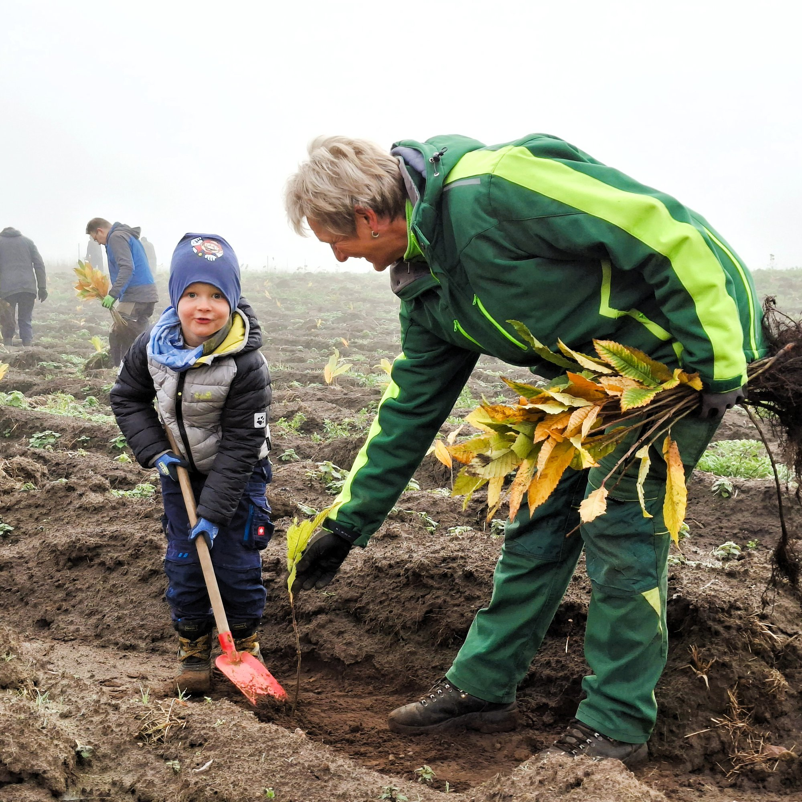

haben wir ca. erreicht

werden durch nachhaltige Heizungsanlagen (Scheitholz, Pellets, Wärmepumpe) beheizt.
Bruch- und Wurfholz sowie Schadholzmengen durch Hagelschlag.


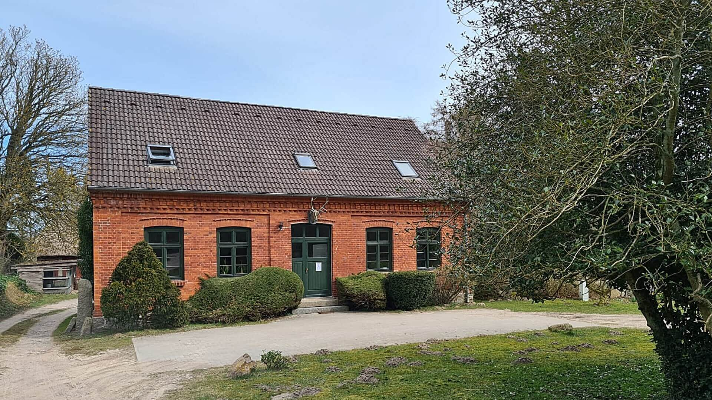

im GIS GAIA

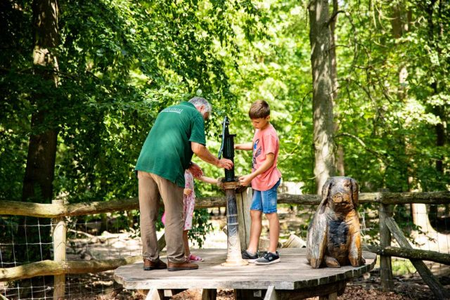


Waldmoorrevitalisierungsprojekte umgesetzt


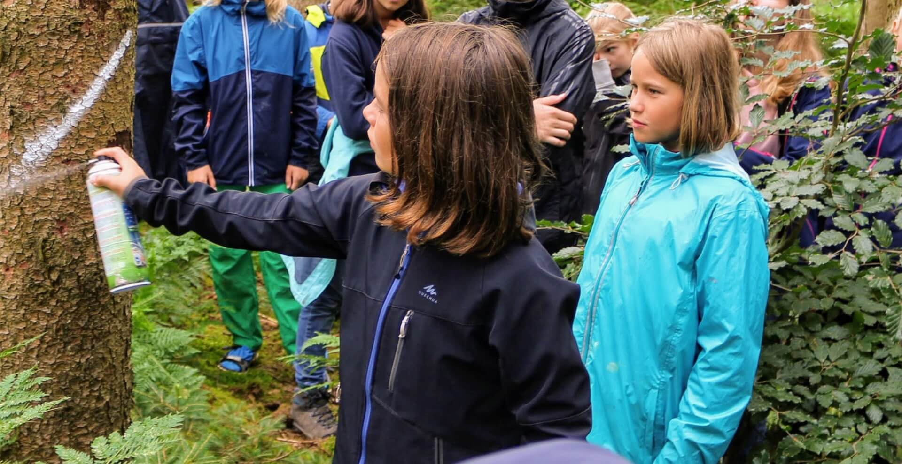
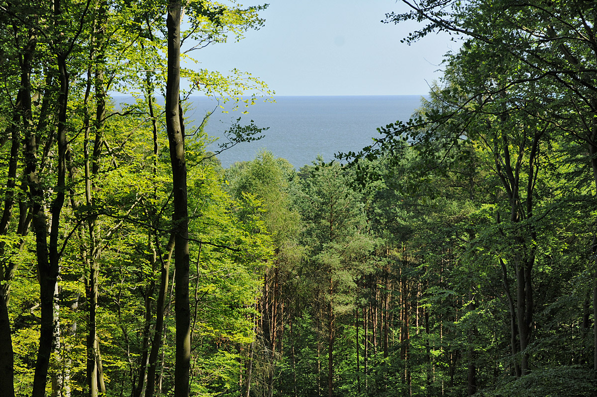
haben wir mittlerweile ausgebildet.

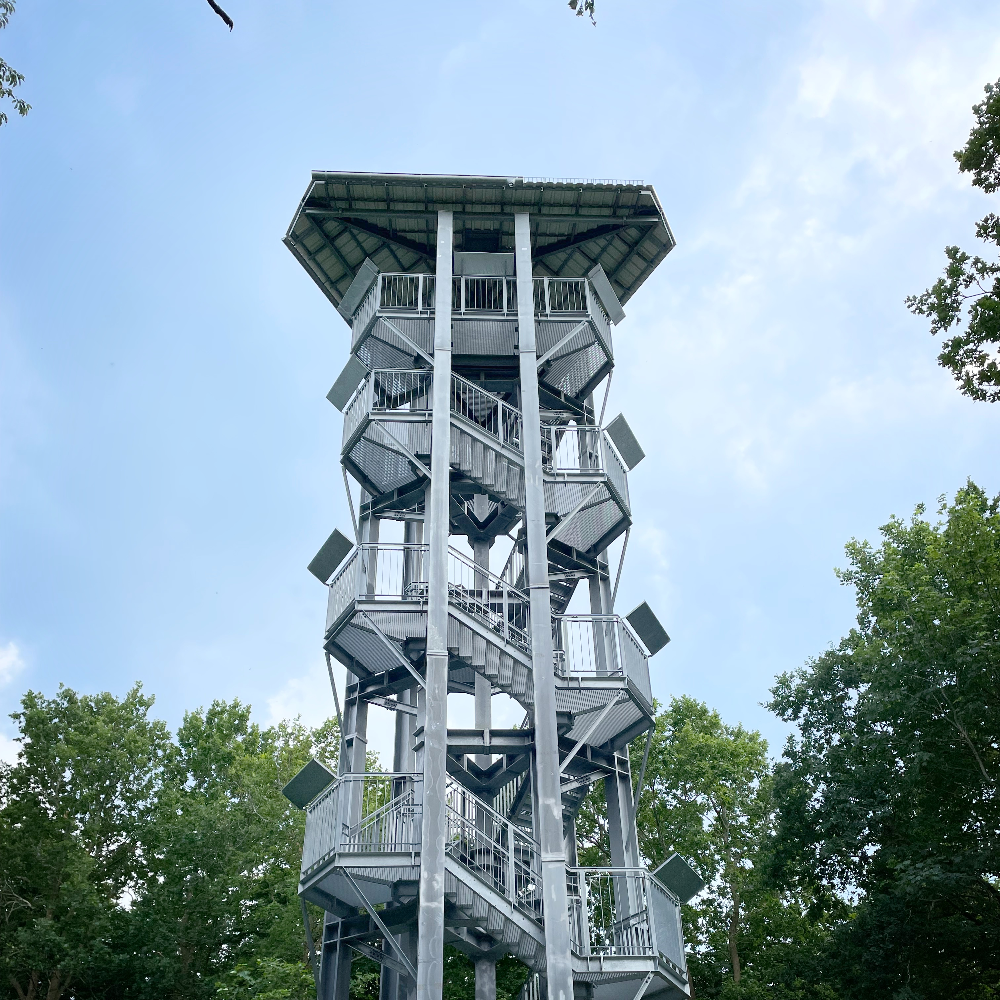


Vorbeugender Waldbrandschutz, Waldbrandnachsorge und Wissenstransfer in der praktischen Anwendung

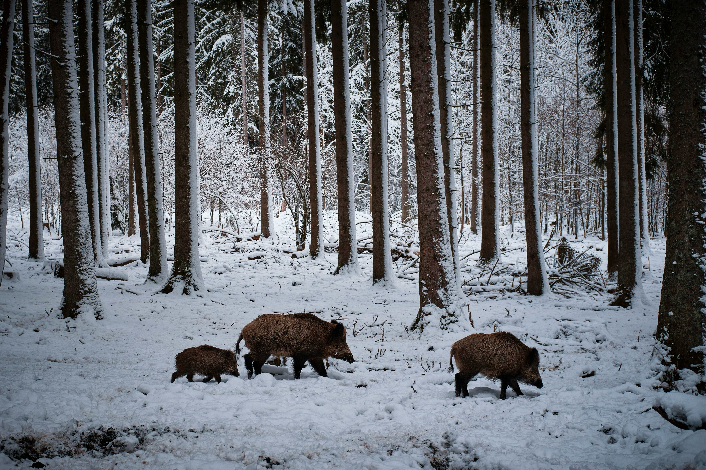
lang ist die theoretische Schnur aus allen Flächenumringen unserer FGK, womit man den 40.075 km langen Äquator insgesamt 5,84-mal umrunden könnte.

sind das Ergebnis der 13 Flugprojekte, die wir realisiert haben. Die dabei erfasste Fläche summiert sich auf 1.051 ha.

forsthoheitliche Verwaltungsverfahren

Wiedervernässte Moore können ca. 20 Tonnen CO2-Äquivalente pro Hektar und Jahr einsparen.
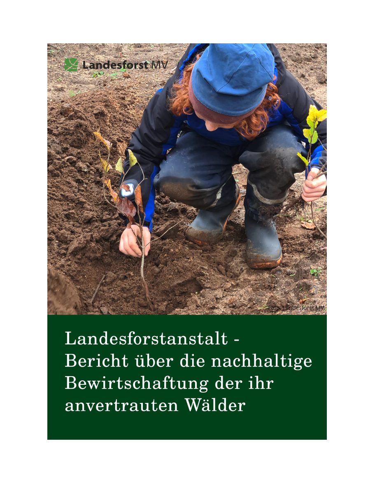

werden jedes Jahr bei der Erheblichkeitsabschätzung automatisch den Revieren und Forstämtern zur Verfügung gestellt.

wurden gedruckt, eine Gesamtfläche von 131.544 qm. Damit ließen sich rund 18,5 Fußballfelder mit A0-Karten auslegen.

haben teilgenommen

ausgebildet

Wald in das Eigentum der Landesforst MV.

Anzahl der zugestimmten Waldkompensationspools ab 2016

CO2-Äquivalente durch Waldmoorrevitalisierungsprojekte eingespart

zugestimmte bzw. in Erstellung befindliche Ökokonten
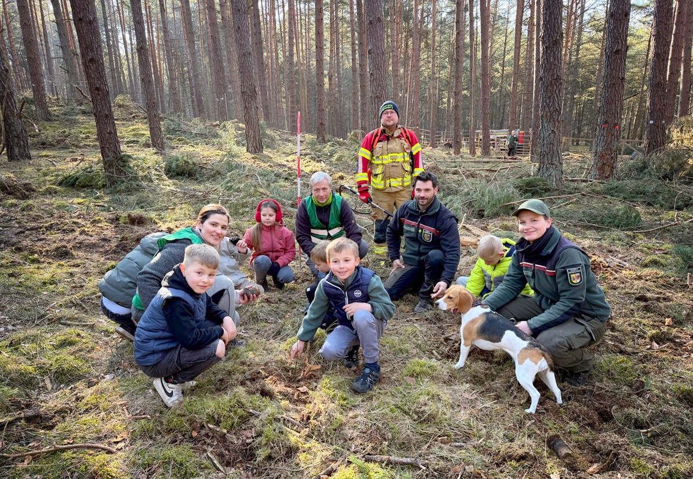
durchgeführt

zugestimmte bzw. in Erstellung befindliche Waldflächenkompensationspools
Der Basketballclub Rostock Seawolves und die Landesforst MV starten eine innovative Kooperation.

beträgt die Eigentumsfläche der LFoA

wurden verbraucht
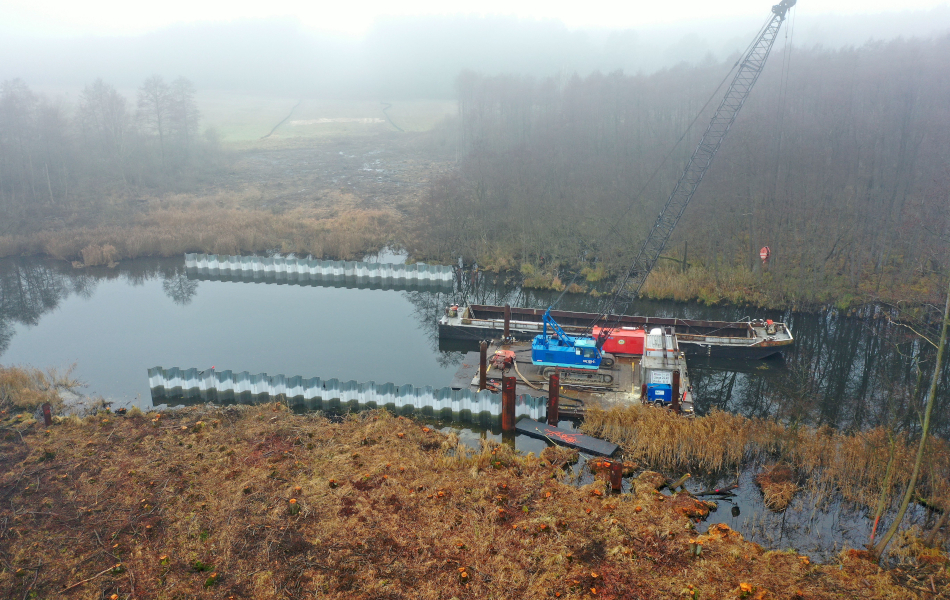
Waldumwandlungsfläche
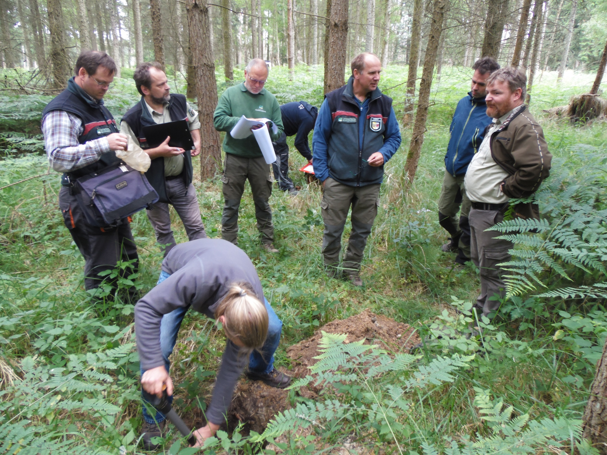
echte Gesamtwaldmehrungsfläche

Vorgänge im Grundstücksverkehr bearbeitet (i.W. Ankauf, Verkauf, Tausch, BOV)

unzählbar viele Ameisen aus Baufeldern gerettet und im Wald der LFoA ein neues zu Hause gegeben.

sind aktuell im Einsatz